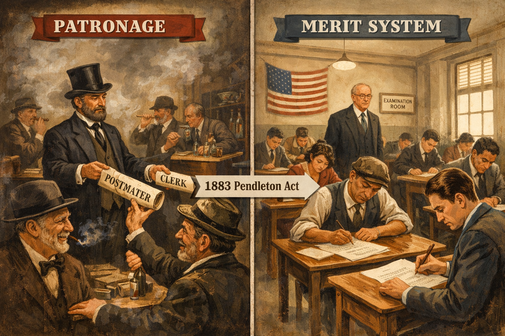
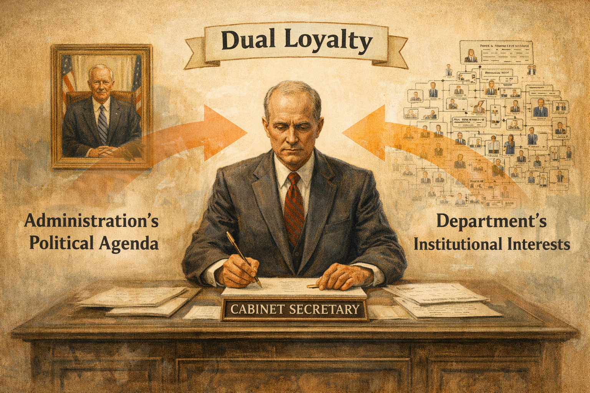
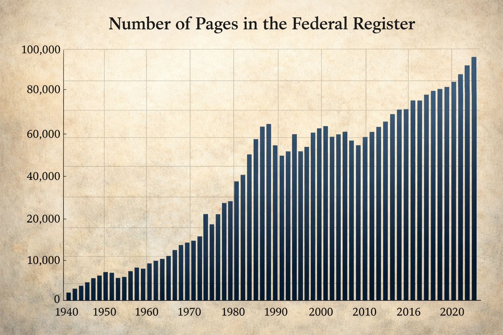

Core Objectives
- Analyze the structural evolution of the federal bureaucracy from the 19th-century patronage system to the modern merit system.
- Explain how discretionary authority and the rulemaking process empower bureaucratic agencies to transform legislative intent into enforceable regulations.
- Evaluate the impact of policy networks, specifically iron triangles and issue networks, on the durability of federal programs and the legislative process.
- Assess the constitutional mechanisms utilized by the President, Congress, and the Judiciary to maintain democratic accountability over unelected administrators.
Key Terms
Introduction
When Americans think of their government, they often visualize the iconic symbols of democracy: the white dome of the Capitol building, the portico of the White House, or the nine justices of the Supreme Court posing for their official photograph. They imagine the high drama of debates on the Senate floor or the President signing a historic bill into law before a cheering crowd. However, these visible moments are only the beginning of governance. Once the cameras are turned off and the ink is dry, a law does not magically enforce itself. The Clean Air Act did not immediately purify the sky, nor did the Social Security Act instantly mail checks to the elderly. The bridge between a written law and its actual result in the real world is built by the federal bureaucracy.
Often described as the "Fourth Branch" of government, the bureaucracy consists of the millions of unelected employees, departments, and agencies charged with the constitutional duty to "faithfully execute" the laws. While the Constitution grants legislative power to Congress and executive power to the President, it says remarkably little about how the day-to-day business of government should be conducted. It does not mention the Environmental Protection Agency, the Federal Aviation Administration, or the Department of Education. Yet, without these institutions, the laws passed by Congress would be nothing more than paper suggestions. The bureaucracy is the engine of the modern state, translating the abstract promises of democracy into the concrete reality of daily life.
For many citizens, the term "bureaucracy" carries a negative connotation. It summons images of endless lines at the Department of Motor Vehicles, confusing tax forms, and faceless clerks mindlessly following rigid procedures. This frustration is often captured by the term red tape, which refers to the complex rules and procedures that must be followed to get something done. While complaints about inefficiency are a legitimate part of political discourse, they often obscure the essential function of these agencies. The bureaucracy is the air traffic controller guiding planes safely to the runway; it is the food inspector ensuring the safety of the meat supply; it is the scientist tracking infectious diseases; and it is the ranger preserving national forests. It is the mechanism through which modern society functions.
The power of the bureaucracy lies in its expertise and its permanence. Presidents come and go, and control of Congress shifts with election cycles, but the bureaucracy remains. This permanence creates a unique tension in the American political system. The United States was founded on the principle of consent of the governed, yet the vast majority of the people who make the daily decisions about how laws are enforced are never elected by the people. When the Federal Reserve adjusts interest rates or the Food and Drug Administration approves a new vaccine, they are exercising immense power without direct voter approval.
This reality forces citizens to grapple with difficult questions about the nature of democratic governance. How much power should unelected experts have? How can a free society ensure that these powerful agencies serve the public interest rather than their own? Throughout American history, the bureaucracy has grown from a small group of departments in the late 1700s to a vast, complex network today. This growth has been driven by the increasing demands of the public. As the nation industrialized, fought global wars, and sought to regulate a complex economy, the government needed more specialized hands to do the work. Understanding how this system functions—how it is structured, how it creates rules, and how it is held accountable—is essential to understanding how power actually operates in the United States. It is in the halls of these agencies that the broad strokes of public policy are painted into the fine details of American life.
I. The Mechanics of Government: Administrative Structure
The federal bureaucracy is often discussed as if it were a single, monolithic entity—a giant "Washington" that acts with one mind. In reality, the executive branch is a sprawling, fragmented collection of organizations, each designed to solve specific problems and structured to reflect different balances of independence and political control. The way the bureaucracy looks today is not the result of a single architectural blueprint drafted by the Founding Fathers. Instead, it is the accumulation of over two centuries of political battles, emergency responses, and reforms. To understand why the government functions the way it does, one must first examine the people who staff it and the specific types of agencies that house them.
From Patronage to Professionalism

The merit system transformed the federal workforce from a reward for political loyalty into a professionalized service. By requiring competitive examinations and protecting employees from political firing, the civil service gained the stability and neutrality required to manage a complex modern state.
Analysis Question: Why did the transition to a merit-based system increase the expertise within government agencies?
For much of the nineteenth century, the federal workforce was governed by the political maxim "to the victor belong the spoils." This philosophy, known as the patronage system or the spoils system, allowed newly elected presidents to fire existing government workers en masse and replace them with their own political supporters, campaign donors, and friends. President Andrew Jackson was a fierce defender of this practice in the 1830s. He argued that the duties of public office were simple enough that any intelligent person could perform them, and that "rotation in office" was a democratic necessity to prevent the development of an arrogant, permanent elite. While this system helped build strong political parties by rewarding loyalty with jobs, it created a government staffed by amateurs who often lacked the skills to manage a growing nation.
The inefficiencies and inherent corruption of the spoils system eventually turned deadly. In 1881, a mentally unstable lawyer named Charles Guiteau stalked President James A. Garfield for weeks. Guiteau believed he was largely responsible for Garfield’s election victory and felt entitled to a consulship in Paris as a reward. When the administration repeatedly rejected his applications, Guiteau shot the President at a train station in Washington, D.C., shouting that he was a "Stalwart" of the Republican party. Garfield lingered for months before dying, and his assassination shocked the nation into action. The tragedy highlighted the dangers of a system where government employment was treated as personal property rather than a public trust.
In response to public outrage, Congress passed the Pendleton Civil Service Act of 1883. This landmark legislation began the dismantling of the old spoils system and replaced it with the merit system. Under the merit system, government jobs are no longer handed out as political favors. Instead, hiring and promotion are based on proven competence, usually demonstrated through competitive examinations, educational credentials, and experience. The goal was to create a professional, neutral civil service—a corps of experts who could serve the nation effectively regardless of which political party controlled the White House.
Today, the vast majority of federal bureaucrats are protected from political firing. This protection allows a scientist at the Environmental Protection Agency to report inconvenient data on climate change, or an economist at the Labor Department to release accurate unemployment numbers, without fear of retribution from a politician who might want different results. However, this insulation also creates a persistent challenge for presidents. While they can appoint the heads of agencies, they often find it difficult to force the permanent bureaucracy—the millions of career employees who stay for decades—to change direction quickly. This tension between the temporary, elected leadership and the permanent, unelected workforce is a defining feature of modern governance.
Checkpoint 7.1.1
Which event served as the primary catalyst for the passage of the Pendleton Civil Service Act?
The Cabinet and Executive Departments

Cabinet Secretaries operate under a structural tension between their loyalty to the President's policy goals and their duty to lead thousands of permanent career experts. This often results in a "dual loyalty" where secretaries must balance political pressure with bureaucratic reality.
The most visible component of the federal bureaucracy consists of the fifteen Executive Departments. These are the major administrative units of the federal government, each responsible for a broad area of public policy. They employ more than 60 percent of all federal workers. The original departments created in 1789—State, Treasury, and War (now Defense)—reflected the limited role of the early federal government. As the nation’s needs grew, Congress added new departments. The Department of the Interior was created to manage the westward expansion; the Department of Labor was established to address the rights of workers in the industrial age; and the Department of Homeland Security was formed in 2002 to centralize national safety efforts following the September 11 terrorist attacks.
Each of these departments is headed by a Secretary (except for the Justice Department, which is led by the Attorney General). These Secretaries are appointed by the President and must be confirmed by the Senate. Together, they form the President's Cabinet. Theoretically, the Cabinet serves as the President's primary advisory council. In practice, however, Cabinet Secretaries often face a "dual loyalty" dilemma. They are appointed to advocate for the President's policy agenda, but they must also manage the massive, entrenched bureaucracy within their own department.
A Secretary of Defense, for instance, must represent the President's foreign policy goals to the military, but must also represent the military's needs and culture to the President. If a Secretary becomes too focused on defending their department's budget and interests, they may be accused of "going native"—siding with the bureaucracy over the President. Conversely, if they ignore the advice of their career experts to please the White House, they risk policy failure. This structural reality means that presidents often rely less on their Cabinet for advice and more on their immediate White House staff, who have no loyalty other than to the President.
Checkpoint 7.1.2
Why do Cabinet Secretaries often experience "dual loyalty"?
Independent Agencies and Corporations

Federal agencies are structured based on their specific missions. While departments cover broad policy areas, independent agencies allow for scientific or technical focus, and government corporations provide essential public services that might not be profitable in a private market.
Not all government business can be conducted effectively within the rigid hierarchy of a massive Cabinet department. Congress has created Independent Executive Agencies to handle specific tasks that require a degree of focus or insulation from the daily political management of a Cabinet Secretary. These agencies, such as the National Aeronautics and Space Administration (NASA), the Central Intelligence Agency (CIA), or the Environmental Protection Agency (EPA), still report to the President. Their administrators are appointed by the President and can be fired by him. However, by standing outside the fifteen main departments, they avoid getting lost in the bureaucracy of a larger organization. NASA, for example, was kept separate from the military (Department of Defense) to ensure that the American space program would have a civilian, scientific focus rather than a purely martial one.
Even further removed from standard government operations are Government Corporations. These are businesses established by Congress to provide a market-oriented public service. Unlike private companies, they do not pay dividends to shareholders; instead, their goal is to sustain themselves through the fees they charge, though they often rely on government subsidies to stay afloat.
The United States Postal Service (USPS) is the most prominent example. In a purely free market, a private delivery company might refuse to deliver mail to a remote farmhouse in rural North Dakota because the cost of gasoline and time would exceed the price of the stamp. However, the USPS is mandated by law to provide "universal service"—to deliver mail to every address in the country at a uniform price. Because this mission is essential for national communication but not necessarily profitable, the government operates the service itself. Amtrak, the national passenger rail service, functions similarly. These corporations exist in a hybrid state, expected to act like efficient businesses but tethered to government funding and congressional mandates that dictate where they must operate and how much they can charge.
Checkpoint 7.1.3
What distinguishes a Government Corporation from a private corporation?
The Regulatory Commissions

Independent Regulatory Commissions are insulated from short-term political pressure through fixed, staggered terms for their leadership. This independence allows experts to make sensitive economic decisions, such as adjusting interest rates, without the influence of election-year politics.
Perhaps the most powerful entities within the modern bureaucracy are the Independent Regulatory Commissions. Agencies such as the Federal Reserve Board (the Fed), the Federal Communications Commission (FCC), and the Securities and Exchange Commission (SEC) are responsible for regulating specific sectors of the economy. These commissions are unique because they are structurally designed to be independent of presidential control.
While Commissioners are appointed by the President and confirmed by the Senate, they serve fixed, staggered terms that do not align with presidential elections. For example, members of the Federal Reserve Board serve 14-year terms. Furthermore, unlike Cabinet Secretaries, these commissioners cannot be fired by the President simply for disagreeing with his policies; they can only be removed for specific causes like corruption or neglect of duty. This independence is intentional. Congress recognized that decisions about interest rates, media licensing, or stock market rules are technically complex and politically sensitive. If a President could manipulate interest rates to boost the economy right before an election, it might help their campaign but wreck the nation's long-term financial stability.
By insulating these commissions, the system attempts to prioritize long-term economic health and neutral enforcement over short-term political gain. These agencies possess a unique combination of powers: they write rules (legislative), enforce them (executive), and punish violators (judicial). This concentration of power in independent bodies makes them formidable centers of authority, often leading to debates about whether they are too removed from democratic accountability.
Checkpoint 7.1.4
Why are Independent Regulatory Commissions given fixed terms and protection from removal by the President?
The Architecture of Expertise

The architecture of the federal bureaucracy is built on specialized expertise and institutional permanence. While this structure ensures professional administration, the proliferation of agencies can lead to fragmentation, where different offices may overlap or conflict in their duties.
Analysis Question: How does the "permanence" of the bureaucracy create a challenge for a newly elected President?
The structure of the federal bureaucracy is not accidental; it is a reflection of American political values and historical lessons. The shift to the merit system prioritized competence over loyalty, ensuring that the engineers who build bridges and the doctors who approve medicines are qualified for the job. The creation of independent agencies and commissions acknowledged that some decisions—like monetary policy or intelligence gathering—require insulation from the heat of partisan politics.
However, this complexity comes with a cost. The sheer number of agencies, each with its own culture, rules, and congressional committees overseeing it, can lead to fragmentation. Agencies may unknowingly duplicate work or, worse, work at cross-purposes. Yet, this architecture serves as the foundation for modern governance, allowing the state to handle the immense responsibilities of a superpower while attempting to maintain a professional distance from the whims of electoral politics. As we will see in the next section, these structures are merely the vehicle; the actual power of the bureaucracy lies in how it interprets and enforces the law.
II. Implementation and Rulemaking: Policy in Practice
When Congress passes a law, it is rarely a detailed instruction manual. Legislation is often the product of difficult compromise, written in broad, vague language to ensure enough votes for passage. A law might instruct the government to "ensure safe working conditions" or "protect endangered species," but it rarely specifies the exact chemical limits for factory air or the precise radius of a habitat protection zone. This gap between the intent of the law and the reality of its enforcement is filled by the bureaucracy through the process of implementation.
The Power of Discretionary Authority

Discretionary authority allows expert bureaucrats to fill the gaps left by broad or vague legislation. Because Congress cannot be expert in every field, it delegates the power to define technical standards and enforcement details to specialized agencies.
Analysis Question: Why is it practically necessary for Congress to delegate this authority to unelected experts?
The most significant power held by the modern bureaucracy is discretionary authority. This is the power given to appointed bureaucrats to decide how a law is implemented and to decide what Congress meant when it passed a bill. Because members of Congress cannot be experts on every subject—from nuclear safety to pharmaceutical chemistry—they delegate the details to the experts within the agencies.
For example, when Congress passed the Controlled Substances Act, it created schedules for classifying drugs but left much of the decision-making on which drugs fit into which schedule to the Drug Enforcement Administration (DEA) and the Department of Health and Human Services. This means that unelected officials have the power to decide whether a new synthetic substance is legal or illegal. Similarly, the Department of Transportation determines exactly what safety features a car must have to be sold in the United States. This transfer of power is necessary for a modern government to function; if Congress had to vote on every safety latch or chemical formula, the government would grind to a halt. However, it also means that significant policy decisions are made by people whose names never appear on a ballot.
Checkpoint 7.2.1
What is discretionary authority?
The Rulemaking Process

Rulemaking is the process by which agencies create enforceable regulations. By requiring notice and public comment, the Administrative Procedure Act ensures that businesses, interest groups, and citizens have a formal role in shaping the rules that affect them.
The primary tool agencies use to exercise their discretion is rulemaking. This is the formal process by which bureaucratic agencies create regulations that have the force of law. These regulations are not mere suggestions; a violation of an Environmental Protection Agency (EPA) rule regarding toxic waste carries the same legal weight as violating a statute passed by Congress. In this sense, agencies function as "sub-legislatures," filling in the gaps of the law.
The process of rulemaking is governed by strict procedures to ensure transparency, most notably under the Administrative Procedure Act of 1946. When an agency like the EPA wants to create a new regulation—for instance, setting a new limit on carbon emissions from power plants—it cannot simply issue a decree. First, it must propose the rule and publish it in the Federal Register. Then, it must offer a period for public comment, during which citizens, businesses, and interest groups can submit arguments and evidence supporting or opposing the rule.
This period is often a battleground where industry lobbyists and environmental advocates clash, armed with scientific studies and economic forecasts. The agency must review this feedback and often revises the rule before publishing the final version. This process is designed to prevent arbitrary decisions, but it can be incredibly slow. It allows stakeholders to participate in the process, ensuring that the experts hear from the people who will be affected by the regulations. However, once the rule is finalized, it becomes the standard by which the law is enforced.
Checkpoint 7.2.2
What is the primary purpose of the "notice and comment" period in rulemaking?
Compliance and Monitoring

Compliance monitoring is the "beat cop" function of the bureaucracy. Agencies must actively verify that the rules they have written are being followed by individuals and corporations to ensure public safety and economic stability.
Writing the rules is only half the battle; ensuring they are followed is the other. This is the function of compliance monitoring. Agencies must actively verify that businesses and individuals are adhering to the regulations they have set. This takes many forms, from on-site inspections of meatpacking plants by the Department of Agriculture to the auditing of tax returns by the Internal Revenue Service (IRS).
Compliance monitoring is the "beat cop" function of the bureaucracy. Without it, regulations would be meaningless. For example, the Federal Aviation Administration (FAA) does not just set safety standards for airlines; it employs inspectors to examine maintenance logs and test pilots. This oversight is crucial for public safety, but it is often where the tension between government and the private sector is highest. Businesses often complain that excessive monitoring creates administrative burdens that stifle innovation and profit. Yet, history—such as the 2008 financial crisis—has shown that when compliance monitoring creates blind spots or is relaxed, the consequences for the economy and public safety can be catastrophic.
Checkpoint 7.2.3
Which of the following best describes the function of compliance monitoring?
Adjudication: The Agency as Court

Administrative adjudication allows agencies to resolve disputes over their own regulations without immediately involving the federal court system. These hearings provide a faster, expert-led resolution for technical legal disagreements between the government and private parties.
Analysis Question: Why might some critics find it problematic that an agency acts as both the prosecutor and the judge in these hearings?
Beyond making and enforcing rules, agencies also have the power to resolve disputes, a process known as administrative adjudication. This is a quasi-judicial process in which a bureaucratic agency settles arguments between two parties, much like a court. If a factory owner believes the EPA has unfairly fined them for pollution, they do not immediately go to a federal courtroom. Instead, they often go before an Administrative Law Judge (ALJ) within the agency itself.
These proceedings look very much like trials. Evidence is presented, witnesses are called, and a decision is rendered. The National Labor Relations Board (NLRB), for example, frequently adjudicates disputes between labor unions and employers regarding unfair labor practices. This system allows for faster resolution of technical disputes by judges who are experts in that specific field of law. However, critics argue that this system can be unfair, as the agency acts as both the prosecutor (bringing the charges) and the judge (deciding the case). While decisions can usually be appealed to the federal court system, the initial power of adjudication firmly places the bureaucracy in a role that blends executive, legislative, and judicial functions.
Checkpoint 7.2.4
What is a potential criticism of administrative adjudication?
The Power of the Unelected

The power of the unelected rests on their specialized knowledge. This creates a tension in a democracy, as many of the most impactful daily rules are written by officials who are not directly accountable to the voters.
The implementation of policy through discretionary authority, rulemaking, and administrative adjudication highlights the immense power of the bureaucracy. It transforms the "Fourth Branch" from a simple clerkship into a dynamic political force. While this system allows for the expertise needed to run a complex modern society, it constantly challenges the democratic ideal. The regulations that determine the purity of our water, the safety of our workplace, and the stability of our banks are largely written by people we did not elect. This reality makes the mechanisms of accountability—how we watch the watchers—one of the most critical aspects of American constitutional government.
III. Policy Networks and the "Iron Triangle"
Bureaucratic agencies do not exist in a vacuum, sealed off from the rest of the political world behind concrete walls. They are active, hungry players in a high-stakes game of influence, funding, and policy survival. To protect their budgets, expand their powers, and ensure their programs survive, agencies cultivate deep relationships with the very people they are supposed to regulate and the politicians who control their bank accounts. These relationships often solidify into powerful, exclusive alliances that can dominate the policymaking process. To understand why some government programs seem impossible to cut or why certain industries seem to get favorable treatment, one must look at the geometry of political power known as the iron triangle.
The Anatomy of an Alliance

The iron triangle is a mutually beneficial relationship that stabilizes policy and funding. By exchanging political support, budget authority, and favorable regulations, these three groups create a closed system that is difficult for outside reformers to penetrate.
Analysis Question: Who is typically excluded from the decision-making process within an Iron Triangle?
An iron triangle is a stable, mutually beneficial relationship between three distinct entities: a bureaucratic agency, a congressional committee, and an interest group. Imagine these three groups as the corners of a fortress. Inside the fortress, policy is made efficiently and quietly; outside the fortress, the general public and the President are often kept in the dark.
The strength of the triangle comes from the exchange of resources. Each point of the triangle possesses something the other two need. The bureaucratic agency needs funding and political protection. The congressional committee members need electoral support and success stories to tell their constituents. The interest group needs favorable regulations and government contracts.
Consider the classic example of the "military-industrial complex," a term popularized by President Dwight D. Eisenhower. In this triangle, the three points are the Department of Defense (the agency), the Armed Services Committees in the House and Senate (the congressional committees), and defense contractors like Lockheed Martin or Boeing (the interest groups).
The defense contractors provide millions of dollars in campaign contributions to the members of the Armed Services Committees. They also build factories in the members' home districts, creating jobs that help the politicians get reelected. In return, the committee members vote to approve massive budgets for new fighter jets or submarines, ensuring the contractors get paid. The Department of Defense gets the new equipment and expanded budget authority it wants. To complete the cycle, the Department of Defense gives the contractors favorable treatment and low-regulation contracts, often hiring retired generals to work as consultants for the very companies they used to oversee.
Checkpoint 7.3.1
Which three entities make up an "Iron Triangle"?
The Logic of Mutual Benefit

The durability of iron triangles stems from the logic of mutual benefit. Each participant receives exactly what they need for survival—reelection for politicians, budget growth for agencies, and profitable contracts for interest groups.
The reason iron triangles are so durable is that everyone inside the loop wins. There is no incentive for any of the three participants to break the alliance. If a budget hawk in Congress tries to cancel a weapon system that the Pentagon says is unnecessary, the interest group will mobilize workers in the committee chairman's district to protest the "loss of jobs." The committee chairman will then pressure the Pentagon to keep the program.
This dynamic explains the resilience of agricultural subsidies. The Department of Agriculture, the House Agriculture Committee, and powerful interest groups like the American Farm Bureau Federation work in lockstep. The Farm Bureau delivers rural votes and money to the committee members. The committee funds price support programs. The Department of Agriculture implements these programs, ensuring that subsidies flow smoothly to the farmers. If a President tries to cut these subsidies to save money, the triangle mobilizes to block the cut in Congress, arguing it is an attack on the "American family farmer."
This system creates a form of "client politics," where the government agency serves the specific needs of the interest group (the client) rather than the general welfare of the public. While this is highly efficient for the groups involved, it can be detrimental to democracy. It shuts out opposing voices and makes it incredibly difficult to reform wasteful or outdated programs.
Checkpoint 7.3.2
Why are Iron Triangles considered difficult to break?
From Triangles to Webs: Issue Networks

While iron triangles are closed and stable, modern issue networks are fluid and contentious. These networks involve a wide range of actors who debate policy, often leading to more diverse viewpoints but also more political gridlock.
While iron triangles are known for their rigidity and durability, the modern political landscape has become too complex for simple three-way alliances to dominate every issue. The explosion of interest groups in the 1970s and the rise of 24-hour media have given rise to a more fluid system known as "issue networks."
Unlike the tight, closed nature of an iron triangle, an issue network is a loose, complex, and often contentious cloud of actors who debate a specific policy area. An issue network includes not just the agency, committee, and industry lobbyists, but also university scholars, think tanks, media pundits, environmental activists, and White House staffers.
Take the debate over healthcare reform. There is no single "healthcare triangle." Instead, there is a massive issue network involving insurance companies, doctor associations (like the AMA), patient advocacy groups, hospital unions, academic researchers, and partisan think tanks. Unlike the cooperative nature of an iron triangle, issue networks are often battlegrounds. The players disagree on the facts and the solutions. Environmental policy is another prime example. The EPA does not just work with industrial polluters; it is constantly pressured by the Sierra Club, climate scientists, legal foundations, and state governors. These networks are easier to join than iron triangles, allowing for a broader range of voices, but they also make policymaking messier and more prone to gridlock.
Checkpoint 7.3.3
How does an "Issue Network" differ from an "Iron Triangle"?
The Danger of Agency Capture
Agency capture occurs when a regulatory body begins to prioritize the interests of the industry it is supposed to oversee. This is often facilitated by the "revolving door," where officials move between government roles and high-paying private sector positions.
The existence of these policy networks—whether rigid triangles or messy webs—leads to a phenomenon that political scientists call "agency capture." This occurs when a regulatory agency, created to act in the public interest, effectively advances the commercial or political concerns of the special interest groups it is charged with regulating.
Imagine a watchdog who is fed, housed, and walked by the burglar. Eventually, the watchdog stops barking. This happens in the bureaucracy when the "revolving door" spins too freely. The "revolving door" refers to the practice of government officials leaving public service to take high-paying jobs as lobbyists or consultants for the very industries they used to regulate. A regulator at the Securities and Exchange Commission (SEC) who hopes to get a lucrative job at a Wall Street bank next year may be hesitant to enforce strict regulations on that bank today.
Agency capture distorts the purpose of the bureaucracy. The Department of the Interior is tasked with protecting public lands, but if it is "captured" by mining and timber interests, it may prioritize extraction over conservation. The Federal Aviation Administration (FAA) is supposed to ensure passenger safety, but critics argued that prior to the Boeing 737 MAX crashes, the agency had allowed the manufacturer to essentially self-certify its own safety features to save money. When agencies are captured, the iron triangle is working perfectly for its members, but the "Fourth Branch" fails in its constitutional duty to serve the American people as a whole.
Checkpoint 7.3.4
What is "Agency Capture"?
IV. Bureaucratic Accountability: Democratic Control
The framers of the Constitution did not anticipate a massive federal bureaucracy, but they did understand the danger of unchecked power. As the "Fourth Branch" grew in size and influence, the other three branches—the Legislative, Executive, and Judicial—had to adapt their constitutional powers to ensure that unelected bureaucrats remained accountable to the people. This struggle for control is constant. If the bureaucracy becomes too independent, it threatens democracy; if it becomes too controlled by politics, it loses its competence and neutrality.
Presidential Checks: The Power of Appointment and Orders

The President exercises control over the bureaucracy through the power of appointment and the issuance of executive orders. Additionally, the Office of Management and Budget serves as a central clearinghouse to ensure agency spending aligns with the President's policy agenda.
The President is the Chief Executive, meaning the bureaucracy nominally works for them. The most direct tool the President has to control the bureaucracy is the power of appointment. By nominating the heads of Cabinet departments and independent agencies, the President puts people in charge who share their ideology and policy goals. If a President wants to focus on deregulation, they will appoint an agency head who is skeptical of red tape. If they want to focus on strict environmental protection, they will appoint an aggressive regulator.
However, appointments have limits. The President can only appoint the top layer of officials; the thousands of career civil servants below them are protected by the merit system. To direct these career employees, Presidents use Executive Orders to issue binding instructions to agencies. A President might sign an order directing the Department of Homeland Security to change how it prioritizes deportations, effectively changing the law's impact without Congress passing a new bill. Additionally, the Office of Management and Budget (OMB) is the President’s primary arm for controlling the bureaucracy. The OMB reviews the budget requests of every agency before they go to Congress, allowing the President to cut funding for agencies that are not following his agenda and boost funding for those that are.
Checkpoint 7.4.1
What is the primary limit on the President's power to control the bureaucracy?
Congressional Checks: Purse Strings and Oversight

Congress holds the ultimate authority over the bureaucracy through its control of the federal budget. By threatening to "defund" agencies or summoning leaders to testify at public oversight hearings, legislators can force administrative accountability.
Analysis Question: How does the "power of the purse" act as the most effective check on bureaucratic behavior?
Congress created the bureaucracy, and it retains the ultimate authority to shape it. The most potent weapon in Congress's arsenal is the "power of the purse." No agency can spend a dime unless Congress appropriates the money. If the FBI or the EPA engages in behavior that angers Congress, legislators can simply slash the agency's budget, crippling its ability to function. This threat forces agency heads to listen carefully to the concerns of congressional committees.
Beyond money, Congress utilizes "oversight hearings" to hold bureaucrats accountable. When a scandal occurs—such as a failure to care for veterans or a data breach at a government agency—Congress summons the agency leaders to testify. These hearings are often televised and can be grueling interrogations where agency heads must explain their failures under oath. This public shaming can force resignations and policy changes. Furthermore, the Government Accountability Office (GAO) acts as Congress's watchdog, auditing agency spending and investigating inefficiencies to ensure tax dollars are not wasted.
Congress can also rewrite the legislation that authorizes an agency. If Congress feels that an agency has abused its discretionary authority, it can pass new, more detailed laws that strip away that discretion, forcing the agency to follow strict procedures.
Checkpoint 7.4.2
What is Congress's most potent weapon for controlling the bureaucracy?
Judicial Checks: The Courts and Due Process

The federal courts ensure that bureaucratic actions do not exceed the authority granted by Congress. Through judicial review, courts can strike down regulations that are found to be arbitrary or that violate the constitutional rights of citizens.
The federal courts serve as the final check on bureaucratic power. When an agency issues a rule or penalizes a company, that action can be challenged in court. The judiciary reviews these actions to ensure they are constitutional and that the agency has not exceeded the authority granted to it by Congress.
Citizens and businesses often sue agencies on the grounds that a regulation is arbitrary, capricious, or outside the scope of the law. For example, if the OSHA (Occupational Safety and Health Administration) issues a safety rule that is technically impossible for businesses to follow, a court can strike it down. The courts also ensure that the administrative adjudication process follows due process—meaning that agencies cannot simply seize property or fine individuals without a fair hearing. This judicial review ensures that the drive for bureaucratic efficiency does not trample on individual rights.
Checkpoint 7.4.3
What role do federal courts play in checking bureaucratic power?
Balancing Efficiency and Liberty

The American system seeks to balance the efficiency of a professional bureaucracy with the liberty protected by democratic accountability. While the bureaucracy provides the expertise to run the state, the constitutional branches maintain control over its direction.
The "Fourth Branch" presents a perpetual dilemma for American democracy. We need the expertise and capacity of the bureaucracy to inspect our food, manage our economy, and protect our environment. We want a government that is efficient and effective. Yet, we also fear a government that is too powerful, intrusive, and unresponsive to the public will. The complex system of checks and balances—involving presidential appointments, congressional budgets, and judicial review—is the mechanism by which the American system attempts to thread this needle. It ensures that while the bureaucracy may be the engine of government, the steering wheel remains in the hands of the constitutional branches accountable to the people.
Checkpoint 7.4.4
Why is the bureaucracy sometimes called the "Fourth Branch" of government?
V. Conclusion: The Machinery of Modern Governance
The federal bureaucracy is the complex, often unseen machinery that powers the American government. It is the place where the lofty promises of the Constitution and the statutes of Congress collide with the messy reality of the world. While the transition from the spoils system to the merit system professionalized the government, it created a new set of challenges regarding the power of unelected experts. Through discretionary authority and rulemaking, these agencies define the rules of daily life, from the air we breathe to the interest rates on our student loans.
Yet, this power is not unchecked. The intricate web of iron triangles shows how agencies are tethered to political interests, while the oversight powers of the President, Congress, and the Courts ensure that the bureaucracy remains a servant of the law rather than a master of the people. As we move forward to study the Judicial Branch in the next chapter, we will see how the courts serve as the ultimate arbiter in the disputes between these agencies and the citizens they regulate, further illustrating the complex checks and balances that define the American experiment.
VI. Assessment
Section I – Vocabulary
Instructions: Match the term from the word bank to the correct definition.
1. The quasi-judicial process in which a bureaucratic agency settles disputes between two parties in a manner similar to a court is known as
2. refers to the complex bureaucratic rules and procedures that must be followed to get something done, often seen as a barrier to efficiency.
3. The is the process of promoting and hiring government employees based on their ability to perform a job rather than on political connections.
4. The extent to which appointed bureaucrats can choose courses of action and make policies not spelled out in advance by laws is called .
5. A(n) is a stable, three-way alliance among bureaucratic agencies, congressional committees, and interest groups to stabilize and preserve specific policies.
6. The formal process by which agencies interpret statutes, establish procedures, and enforce standards to implement federal law is called .
7. involves activities undertaken by regulatory agencies to ensure that overseen firms and individuals are following government rules.
Section II – Comprehension
1. Which historical event served as the primary catalyst for the passage of the Pendleton Civil Service Act?
2. Which of the following best describes the primary function of a Regulatory Commission like the FCC or SEC?
3. Why does Congress delegate discretionary authority to bureaucratic agencies?
4. In the context of the "Iron Triangle," what does the Congressional Committee provide to the Bureaucratic Agency?
5. How do Independent Executive Agencies differ from Cabinet Departments?
6. Which of the following is a check Congress can use to control the bureaucracy?
7. What is the purpose of the "notice and comment" period in the rulemaking process?
8. The shift from the Patronage System to the Merit System was intended to:
Section III – Guided Analysis
1. Explain how the process of rulemaking transforms a vague law passed by Congress into a concrete regulation that affects daily life. Use a hypothetical or real example to illustrate your point.
2. Describe the tension between the Merit System and the President's desire to implement their policy agenda. Why might career bureaucrats resist a new President's directives?
3. Analyze the concept of "Agency Capture." How does the Iron Triangle contribute to this phenomenon, and why is it considered a problem for democratic governance?
4. Compare and contrast Compliance Monitoring and Administrative Adjudication. How do these two functions work together to ensure laws are followed?
Section IV – Visual Analysis

Analysis Question 1: Based on the description of the visual, explain how the relationship between the Interest Group and the Congressional Committee ultimately benefits the Bureaucratic Agency.
Analysis Question 2: Why might a reform group representing the general public find it difficult to break into this triangular relationship to change policy?

Analysis Question 1: What does the dramatic increase in the size of the Federal Register suggest about the role of the federal government in the economy and society over the last century?
Analysis Question 2: Connecting this to the concept of Discretionary Authority, who is actually writing the content filling these thousands of pages?
Section V – Primary Source (CER)
— Alexander Hamilton, The Federalist Papers No. 72
Writing Prompt: Using the excerpt above and your knowledge of the chapter, write a Claim-Evidence-Reasoning (CER) paragraph responding to the following: Does Hamilton’s view of "administration" support the modern concept of a vast bureaucracy with discretionary authority?
Claim: State clearly whether Hamilton’s definition aligns with the modern bureaucracy.
Evidence: Quote specific phrases from the text regarding "executive details" or specific duties.
Reasoning: Explain how the modern reality of rulemaking and independent agencies either fulfills or exceeds the "executive details" Hamilton describes.
Section VI – Modern Reflection
Prompt: In recent years, there has been significant political debate regarding the "Deep State"—a term used by critics to describe career bureaucrats who they believe secretly manipulate policy to undermine elected leaders. Using the concepts of the Merit System, Discretionary Authority, and Bureaucratic Accountability learned in this chapter, evaluate this modern argument. Is the resistance of career officials to radical policy changes a "threat to democracy" or a "constitutional safety valve" designed to ensure stability and legal compliance? Defend your position.